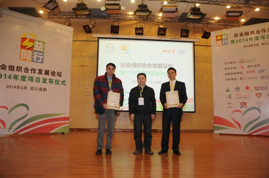

加多宝联手英特尔助力雅安 “建设型扶贫”模式再创新
2014-06-17
3月10日，由中国扶贫基金会、加多宝集团、英特尔中国共同举办的“公益同行?社会组织合作发展论坛暨2014年度项目发布仪式”在四川成都举行，加多宝集团营销事业部副总经理李春林、英特尔技术与制造事业部副总裁卞成刚、中国扶贫基金会秘书长刘文奎、相关领域专家及150余名社会组织代表共同见证了此次发布仪式的召开，并就“公益同行——NGO合作社区发展计划”这一灾后援建新模式展开深度讨论。此次“公益同行——NGO合作社区发展计划”是国内首个企业定向支持基层NGO发展超过千万级的项目，也是加多宝集团在“以善促善，人人公益”企业公益理念指导下，对“建设型扶贫”模式一次新探索。

加多宝集团营销事业部副总经理李春林（右一）与中国扶贫基金会秘书长刘文奎（中）英特尔（中国）有限公司副总裁卞成刚共同开启公益同行计划
加多宝携手中国扶贫基金会 共建人道救援联动平台
2014-06-17
4月7日，由加多宝集团和中国扶贫基金会、英特尔（中国）共同举办的人道救援网络启动大会在四川举行，国际美慈组织、蓝天救援队等加入救援网络的26家NGO组织代表悉数到场。此次启动大会的召开，标志着我国民间灾害救援全领域联动平台的建立，这是加多宝对“建设型扶贫”模式一种新尝试，更是加多宝集团对“以善促善，人人公益”企业公益理念的又一次践行。
我国是自然灾害多发国家，5.12汶川大地震、西南五省干旱、玉树地震、舟曲泥石流、南方水灾、芦山地震等重大灾害对人类及环境造成了破坏性影响，因此带来的人员伤亡、财产损失，是社区因灾致贫、因灾返贫的主要原因。
加多宝员工月捐走进贫困山区 捐赠20万元爱心图书
2014-06-13
5月23日，加多宝集团携手安徽经视《第一时间》，在安徽合肥启动“映山红行动”。启动仪式上，加多宝集团宣布，已从“加多宝扶贫基金”员工月捐项目中拨款20万元，并通过中国扶贫基金会购买爱心图书，用于捐赠给安徽地区的10所贫困小学。此次爱心图书的捐献，是加多宝员工月捐关注山区贫困小学的又一次爱心行动，也是加多宝集团“以善促善，人人公益”企业公益理念的再一次践行。
启动仪式结束后，加多宝集团月捐员工作为爱心志愿者，联合安徽经视《第一时间》栏目，走进淮南市大通区沈岗小学等受捐学校，进行爱心图书的发放。此外，加多宝月捐员工还通过讲授科普知识、游戏互动等形式，让孩子们了解到更加丰富的世界，开拓他们的视野，进而帮助他们开启努力学习、走出大山的梦想。